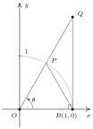

Trigonometria
27 Funções Circulares
Resumo do capítulo
A partir de seno e cosseno, definem-se as demais quatro funções trigonométricas -- tangente, cotangente, secante e cossecante -- e este capítulo estuda seus domínios, suas periodicidades e as identidades fundamentais que as relacionam.
- $\tan \left( \dfrac{\pi}{4} \right) = 1$
- $\sec \left( \dfrac{\pi}{6} \right)$resposta$\sec \left( \dfrac{\pi}{6} \right) = \dfrac{2\sqrt{3}}{3}$
- $\csc \left( \dfrac{5\pi}{6} \right)$resposta$\csc \left( \dfrac{5\pi}{6} \right) = 2$
- $\cot \left( \dfrac{4\pi}{3} \right)$resposta$\cot \left( \dfrac{4\pi}{3} \right) = \dfrac{\sqrt{3}}{3}$
- $\tan \left( -\dfrac{11\pi}{6} \right)$resposta$\tan \left( -\dfrac{11\pi}{6} \right) = \dfrac{\sqrt{3}}{3}$
- $\sec \left( -\dfrac{3\pi}{2} \right)$resposta$\sec \left( -\dfrac{3\pi}{2} \right)$ é indefinido
- $\csc \left( -\dfrac{\pi}{3} \right)$resposta$\csc \left( -\dfrac{\pi}{3} \right) = -\dfrac{2\sqrt{3}}{3}$
- $\cot \left( \dfrac{13\pi}{2} \right)$resposta$\cot \left( \dfrac{13\pi}{2} \right) = 0$
- $\tan \left( 117\pi \right)$resposta$\tan \left( 117\pi \right) = 0$
- $\sec \left( -\dfrac{5\pi}{3} \right)$resposta$\sec \left( -\dfrac{5\pi}{3} \right) = 2$
- $\csc \left( 3\pi \right)$resposta$\csc \left( 3\pi \right)$ é indefinido
- $\cot \left( -5\pi \right)$resposta$\cot \left( -5\pi \right)$ é indefinido
- $\tan \left( \dfrac{31\pi}{2} \right)$resposta$\tan \left( \dfrac{31\pi}{2} \right)$ é indefinido
- $\sec \left( \dfrac{\pi}{4} \right)$resposta$\sec \left( \dfrac{\pi}{4} \right) = \sqrt{2}$
- $\csc \left( -\dfrac{7\pi}{4} \right)$resposta$\csc \left( -\dfrac{7\pi}{4} \right) = \sqrt{2}$
- $\cot \left( \dfrac{7\pi}{6} \right)$resposta$\cot \left( \dfrac{7\pi}{6} \right) = \sqrt{3}$
- $\tan \left( \dfrac{2\pi}{3} \right)$resposta$\tan \left( \dfrac{2\pi}{3} \right) = -\sqrt{3}$
- $\sec \left( -7\pi \right)$resposta$\sec \left( -7\pi \right) = -1$
- $\csc \left( \dfrac{\pi}{2} \right)$resposta$\csc \left( \dfrac{\pi}{2} \right) = 1$
- $\cot \left( \dfrac{3\pi}{4} \right) = -1$
- $\sin(\theta) = \frac{3}{5}, \cos(\theta) = -\frac{4}{5}, \tan(\theta) = -\frac{3}{4}, \csc(\theta) = \frac{5}{3}, \sec(\theta) = -\frac{5}{4}, \cot(\theta) = -\frac{4}{3}$
- $\tan(\theta) = \dfrac{12}{5}$ com $\theta$ no Quadrante IIIresposta$\sin(\theta) = -\frac{12}{13}, \cos(\theta) = -\frac{5}{13}, \tan(\theta) = \frac{12}{5}, \csc(\theta) = -\frac{13}{12}, \sec(\theta) = -\frac{13}{5}, \cot(\theta) = \frac{5}{12}$
- $\csc(\theta) = \dfrac{25}{24}$ com $\theta$ no Quadrante Iresposta$\sin(\theta) = \frac{24}{25}, \cos(\theta) = \frac{7}{25}, \tan(\theta) = \frac{24}{7}, \csc(\theta) = \frac{25}{24}, \sec(\theta) = \frac{25}{7}, \cot(\theta) = \frac{7}{24}$
- $\sec(\theta) = 7$ com $\theta$ no Quadrante IVresposta$\sin(\theta) = \frac{-4\sqrt{3}}{7}, \cos(\theta) = \frac{1}{7}, \tan(\theta) = -4\sqrt{3}, \csc(\theta) = -\frac{7\sqrt{3}}{12}, \sec(\theta) = 7, \cot(\theta) = -\frac{\sqrt{3}}{12}$
- $\csc(\theta) = -\dfrac{10\sqrt{91}}{91}$ com $\theta$ no Quadrante IIIresposta$\sin(\theta) = -\frac{\sqrt{91}}{10}, \cos(\theta) = -\frac{3}{10}, \tan(\theta) = \frac{\sqrt{91}}{3}, \csc(\theta) = -\frac{10\sqrt{91}}{91}, \sec(\theta) = -\frac{10}{3}, \cot(\theta) = \frac{3\sqrt{91}}{91}$
- $\cot(\theta) = -23$ com $\theta$ no Quadrante IIresposta$\sin(\theta) = \frac{\sqrt{530}}{530}, \cos(\theta) = -\frac{23\sqrt{530}}{530}, \tan(\theta) = -\frac{1}{23}, \csc(\theta) = \sqrt{530}, \sec(\theta) = -\frac{\sqrt{530}}{23}, \cot(\theta) = -23$
- $\tan(\theta) = -2$ com $\theta$ no Quadrante IV.resposta$\sin(\theta) = -\frac{2\sqrt{5}}{5}, \cos(\theta) = \frac{\sqrt{5}}{5}, \tan(\theta) = -2, \csc(\theta) = -\frac{\sqrt{5}}{2}, \sec(\theta) = \sqrt{5}, \cot(\theta) = -\frac{1}{2}$
- $\sec(\theta) = -4$ com $\theta$ no Quadrante II.resposta$\sin(\theta) = \frac{\sqrt{15}}{4}, \cos(\theta) = -\frac{1}{4}, \tan(\theta) = -\sqrt{15}, \csc(\theta) = \frac{4\sqrt{15}}{15}, \sec(\theta) = -4, \cot(\theta) = -\frac{\sqrt{15}}{15}$
- $\cot(\theta) = \sqrt{5}$ com $\theta$ no Quadrante III.resposta$\sin(\theta) = -\frac{\sqrt{6}}{6}, \cos(\theta) = -\frac{\sqrt{30}}{6}, \tan(\theta) = \frac{\sqrt{5}}{5}, \csc(\theta) = -\sqrt{6}, \sec(\theta) = -\frac{\sqrt{30}}{5}, \cot(\theta) = \sqrt{5}$
- $\cos(\theta) = \dfrac{1}{3}$ com $\theta$ no Quadrante I.resposta$\sin(\theta) = \frac{2\sqrt{2}}{3}, \cos(\theta) = \frac{1}{3}, \tan(\theta) = 2\sqrt{2}, \csc(\theta) = \frac{3\sqrt{2}}{4}, \sec(\theta) = 3, \cot(\theta) = \frac{\sqrt{2}}{4}$
- $\cot(\theta) = 2$ com $0 < \theta < \dfrac{\pi}{2}$.resposta$\sin(\theta) = \frac{\sqrt{5}}{5}, \cos(\theta) = \frac{2\sqrt{5}}{5}, \tan(\theta) = \frac{1}{2}, \csc(\theta) = \sqrt{5}, \sec(\theta) = \frac{\sqrt{5}}{2}, \cot(\theta) = 2$
- $\csc(\theta) = 5$ com $\dfrac{\pi}{2} < \theta < \pi$.resposta$\sin(\theta) = \frac{1}{5}, \cos(\theta) = -\frac{2\sqrt{6}}{5}, \tan(\theta) = -\frac{\sqrt{6}}{12}, \csc(\theta) = 5, \sec(\theta) = -\frac{5\sqrt{6}}{12}, \cot(\theta) = -2\sqrt{6}$
- $\tan(\theta) = \sqrt{10}$ com $\pi < \theta < \dfrac{3\pi}{2}$.resposta$\sin(\theta) = -\frac{\sqrt{110}}{11}, \cos(\theta) = -\frac{\sqrt{11}}{11}, \tan(\theta) = \sqrt{10}, \csc(\theta) = -\frac{\sqrt{110}}{10}, \sec(\theta) = -\sqrt{11}, \cot(\theta) = \frac{\sqrt{10}}{10}$
- $\sin(\theta) = -\frac{\sqrt{95}}{10}, \cos(\theta) = \frac{\sqrt{5}}{10}, \tan(\theta) = -\sqrt{19}, \csc(\theta) = -\frac{2\sqrt{95}}{19}, \sec(\theta) = 2\sqrt{5}, \cot(\theta) = -\frac{\sqrt{19}}{19}$
- $\csc(78.95^{\circ}) \approx 1.019$
- $\tan(-2.01)$resposta$\tan(-2.01) \approx 2.129$
- $\cot(392.994)$resposta$\cot(392.994) \approx 3.292$
- $\sec(207^{\circ})$resposta$\sec(207^{\circ}) \approx -1.122$
- $\csc(5.902)$resposta$\csc(5.902) \approx -2.688$
- $\tan(39.672^{\circ})$resposta$\tan(39.672^{\circ}) \approx 0.829$
- $\cot(3^{\circ})$resposta$\cot(3^{\circ}) \approx 19.081$
- $\sec(0.45) \approx 1.111$
- $\tan(\theta) = \sqrt{3}$ quando $\theta = \dfrac{\pi}{3} + \pi k$ para qualquer inteiro $k$
- $\sec(\theta) = 2$resposta$\sec(\theta) = 2$ quando $\theta = \dfrac{\pi}{3} + 2\pi k$ or $\theta = \dfrac{5\pi}{3} + 2\pi k$ para qualquer inteiro $k$
- $\csc(\theta) = -1$resposta$\csc(\theta) = -1$ quando $\theta = \dfrac{3\pi}{2} + 2\pi k$ para qualquer inteiro $k$.
- $\cot(\theta) = \dfrac{\sqrt{3}}{3}$resposta$\cot(\theta) = \dfrac{\sqrt{3}}{3}$ quando $\theta = \dfrac{\pi}{3} + \pi k$ para qualquer inteiro $k$
- $\tan(\theta) = 0$resposta$\tan(\theta) = 0$ quando $\theta = \pi k$ para qualquer inteiro $k$
- $\sec(\theta) = 1$resposta$\sec(\theta) = 1$ quando $\theta = 2\pi k$ para qualquer inteiro $k$
- $\csc(\theta) = 2$resposta$\csc(\theta) = 2$ quando $\theta = \dfrac{\pi}{6} + 2\pi k$ or $\theta = \dfrac{5\pi}{6} + 2\pi k$ para qualquer inteiro $k$.
- $\cot(\theta) = 0$resposta$\cot(\theta) = 0$ quando $\theta = \dfrac{\pi}{2} + \pi k$ para qualquer inteiro $k$
- $\tan(\theta) = -1$resposta$\tan(\theta) = -1$ quando $\theta = \dfrac{3\pi}{4} + \pi k$ para qualquer inteiro $k$
- $\sec(\theta) = 0$resposta$\sec(\theta) = 0$ nunca acontece
- $\csc(\theta) = -\dfrac{1}{2}$resposta$\csc(\theta) = -\dfrac{1}{2}$ nunca acontece
- $\sec(\theta) = -1$resposta$\sec(\theta) = -1$ quando $\theta = \pi + 2\pi k = (2k+1)\pi$ para qualquer inteiro $k$
- $\tan(\theta) = -\sqrt{3}$resposta$\tan(\theta) = -\sqrt{3}$ quando $\theta = \dfrac{2\pi}{3} + \pi k$ para qualquer inteiro $k$
- $\csc(\theta) = -2$resposta$\csc(\theta) = -2$ quando $\theta = \dfrac{7\pi}{6} + 2\pi k$ or $\theta = \dfrac{11\pi}{6} + 2\pi k$ para qualquer inteiro $k$
- $\cot(\theta) = -1$ quando $\theta = \dfrac{3\pi}{4} + \pi k$ para qualquer inteiro $k$
- $\cot(t) = 1$ quando $t = \dfrac{\pi}{4} + \pi k$ para qualquer inteiro $k$
- $\tan(t) = \dfrac{\sqrt{3}}{3}$resposta$\tan(t) = \dfrac{\sqrt{3}}{3}$ quando $t = \dfrac{\pi}{6} + \pi k$ para qualquer inteiro $k$
- $\sec(t) = -\dfrac{2\sqrt{3}}{3}$resposta$\sec(t) = -\dfrac{2\sqrt{3}}{3}$ quando $t = \dfrac{5\pi}{6} + 2\pi k$ or $t = \dfrac{7\pi}{6} + 2\pi k$ para qualquer inteiro $k$
- $\csc(t) = 0$resposta$\csc(t) = 0$ nunca acontece
- $\cot(t) = -\sqrt{3}$resposta$\cot(t) = -\sqrt{3}$ quando $t = \dfrac{5\pi}{6} + \pi k$ para qualquer inteiro $k$
- $\tan(t) = -\dfrac{\sqrt{3}}{3}$resposta$\tan(t) = -\dfrac{\sqrt{3}}{3}$ quando $t = \dfrac{5\pi}{6} + \pi k$ para qualquer inteiro $k$
- $\sec(t) = \dfrac{2\sqrt{3}}{3}$resposta$\sec(t) = \dfrac{2\sqrt{3}}{3}$ quando $t = \dfrac{\pi}{6} + 2\pi k$ or $t = \dfrac{11\pi}{6} + 2\pi k$ para qualquer inteiro $k$
- $\csc(t) = \dfrac{2\sqrt{3}}{3}$ quando $t = \dfrac{\pi}{3} + 2\pi k$ or $t = \dfrac{2\pi}{3} + 2\pi k$ para qualquer inteiro $k$
- $\theta = 30^{\circ}$, $a = 3\sqrt{3}$, $c = \sqrt{108} = 6\sqrt{3}$
- Encontre $\alpha$, $b$ e $c$.resposta$\alpha = 56^{\circ}$, $b = 12 \tan(34^{\circ}) = 8.094$, $c = 12\sec(34^{\circ}) = \dfrac{12}{\cos(34^{\circ})} \approx 14.475$
- Encontre $\theta$, $a$ e $c$.resposta$\theta = 43^{\circ}$, $a = 6\cot(47^{\circ}) = \dfrac{6}{\tan(47^{\circ})} \approx 5.595$, $c = 6\csc(47^{\circ}) = \dfrac{6}{\sin(47^{\circ})} \approx 8.204$
- $\beta = 40^{\circ}$, $b = 2.5 \tan(50^{\circ}) \approx 2.979$, $c = 2.5\sec(50^{\circ}) = \dfrac{2.5}{\cos(50^{\circ})} \approx 3.889$
- Se $\theta = 30^{\circ}$ e o cateto oposto a $\theta$ tem comprimento $4$, qual é o comprimento do cateto adjacente a $\theta$?respostaO cateto adjacente to $\theta$ tem comprimento $4\sqrt{3} \approx 6.928$
- Se $\theta = 15^{\circ}$ e a hipotenusa tem comprimento $10$, qual é o comprimento do cateto oposto a $\theta$?respostaO cateto oposto $\theta$ tem comprimento $10 \sin(15^{\circ}) \approx 2.588$
- Se $\theta = 87^{\circ}$ e o cateto adjacente a $\theta$ tem comprimento $2$, qual é o comprimento do cateto oposto a $\theta$?respostaO cateto oposto $\theta$ tem comprimento $2\tan(87^{\circ}) \approx 38.162$
- Se $\theta = 38.2^{\circ}$ e o cateto oposto a $\theta$ tem comprimento $14$, qual é o comprimento da hipotenusa?respostaA hipotenusa tem comprimento $14 \csc(38.2^{\circ}) = \dfrac{14}{\sin(38.2^{\circ})} \approx 22.639$
- Se $\theta = 2.05^{\circ}$ e a hipotenusa tem comprimento $3.98$, qual é o comprimento do cateto adjacente a $\theta$?respostaO cateto adjacente to $\theta$ tem comprimento $3.98 \cos(2.05^{\circ}) \approx 3.977$
- Se $\theta = 42^{\circ}$ e o cateto adjacente a $\theta$ tem comprimento $31$, qual é o comprimento do cateto oposto a $\theta$?respostaO cateto oposto $\theta$ tem comprimento $31\tan(42^{\circ}) \approx 27.912$
- Uma árvore, de pé em solo plano, projeta uma sombra de 120 pés. O ângulo de elevação, a partir do final da sombra até o topo da árvore, é de $21.4^{\circ}$. Encontre a altura da árvore, arredondando em pés. Com a ajuda de seus colegas de classe, pesquise o termo umbra versa e veja qual é a sua relação com a sombra neste problema.respostaA árvore tem cerca de 47 pés de altura.
- A torre de transmissão da estação de rádio WSAZ (Casa de "Álgebra pela Manhã com Carl e Jeff") possui duas enormes luzes vermelhas piscantes: uma no topo e outra a alguns metros abaixo do topo. De um ponto a 5000 pés de distância da base da torre, em terreno plano, o ângulo de elevação para a luz superior é de $7.970^{\circ}$ e para a segunda luz é de $7.125^{\circ}$. Encontre a distância entre as luzes, arredondando em pés.respostaAs luzes distam cerca de 75 pés uma da outra.
- O ângulo de depressão de um objeto refere-se ao ângulo cujo lado inicial é uma linha horizontal acima do objeto e cujo lado terminal é a linha de visão para o objeto abaixo da horizontal. Isso é representado esquematicamente abaixo.resposta
O ângulo de depressão a partir da horizontal até o objeto é $\theta$.
- Mostre que se a linha horizontal está acima e paralela ao solo nivelado, então o ângulo de depressão (do observador para o objeto) e o ângulo de inclinação (do objeto para o observador) serão congruentes, pois são ângulos alternados internos.
- De uma torre de observação de incêndios a 200 pés acima do solo plano na Floresta Nacional de Mapinguari, um guarda avista um incêndio ao longe. O ângulo de depressão até o incêndio é de $2.5^{\circ}$. Qual é a distância do incêndio até a base da torre?
- O mapinguari, visto pelo guarda-florestal na parte 78, está correndo diretamente do incêndio em direção à torre de observação. O guarda-florestal faz duas observações. Na primeira observação, o ângulo de depressão da torre para o mapinguari é de $6^{\circ}$. Na segunda observação, feita apenas 10 segundos depois, o ângulo de depressão é de $6.5^{\circ}$. Qual é a distância que o mapinguari percorreu nesses 10 segundos? Arredonde sua resposta para o pé mais próximo. Qual é a velocidade dele em milhas por hora? Arredonde sua resposta para a milha por hora mais próxima. Se o Mapinguari mantiver esse ritmo, quanto tempo ele levará para chegar à torre de observação a partir de sua localização na segunda observação? Arredonde sua resposta para o minuto mais próximo.
- O incêndio está a cerca de 4581 pés da base da torre.
- O mapinguari correu $200\cot(6^{\circ}) - 200\cot(6.5^{\circ}) \approx 147$ pés naqueles 10 segundos. Isso dá $\approx 10$ milhas por hora. Na segunda observação, o mapinguari estava $\approx 1755$ pés da torre, o que significa que ele, se mantiver o ritmo, alcançará a torre em cerca de $2$ minutos.
- Quando estou a 30 pés de distância de uma árvore em casa, o ângulo de elevação até o topo da árvore é de $50^{\circ}$ e o ângulo de depressão até a base da árvore é de $10^{\circ}$. Qual é a altura da árvore? Arredonde sua resposta para o pé mais próximo.respostaA árvore tem cerca de 41 pés de altura.
- Do mirante do farol em Ponto do Mapinguari, a 50 pés acima da superfície do Lago Ippizuti, um salva-vidas avista um barco no lago navegando diretamente em direção ao farol. A primeira observação teve um ângulo de depressão de $8.2^{\circ}$ e a segunda observação teve um ângulo de depressão de $25.9^{\circ}$. Quão longe o barco viajou entre as observações?respostaO barco percorreu cerca de 244 pés.
- Um cabo de sustentação de 1000 pés de comprimento está preso ao topo de uma torre. Quando esticado, faz um ângulo de $43^{\circ}$ com o solo. Qual é a altura da torre? A que distância da base da torre o cabo atinge o solo?respostaA torre tem cerca de 682 pés de altura. O cabo de sustentação atinge o solo a cerca de 731 pés de distância da base da torre.
- $\tan(\theta)\cos(\theta) = \sin(\theta)$
- $\sin(\theta) \csc(\theta) = 1$
- $\tan(\theta) \cot(\theta) = 1$
- $\csc(\theta) \cos(\theta) = \cot(\theta)$
- $\dfrac{\sin(\theta)}{\cos^{2}(\theta)} = \sec(\theta) \tan(\theta)$
- $\dfrac{\cos(\theta)}{\sin^{2}(\theta)} = \csc(\theta) \cot(\theta)$
- $\dfrac{1+ \sin(\theta)}{\cos(\theta)} = \sec(\theta) + \tan(\theta)$
- $\dfrac{1 - \cos(\theta)}{\sin(\theta)} = \csc(\theta) - \cot(\theta)$
- $\dfrac{\cos(\theta)}{1 - \sin^{2}(\theta)} = \sec(\theta)$
- $\dfrac{\sin(\theta)}{1 - \cos^{2}(\theta)} = \csc(\theta)$
- $\dfrac{\sec(\theta)}{1 + \tan^{2}(\theta)} = \cos(\theta)$
- $\dfrac{\csc(\theta)}{1 + \cot^{2}(\theta)} = \sin(\theta)$
- $\dfrac{\tan(\theta)}{\sec^{2}(\theta) - 1} = \cot(\theta)$
- $\dfrac{\cot(\theta)}{\csc^{2}(\theta) - 1} = \tan(\theta)$
- $4 \cos^{2}(\theta) + 4 \sin^{2}(\theta) = 4$
- $9 - \cos^{2}(\theta) - \sin^{2}(\theta) = 8$
- $\tan^{3}(\theta) = \tan(\theta)\sec^{2}(\theta) - \tan(\theta)$
- $\sin^{5}(\theta) = \left(1-\cos^{2}(\theta)\right)^{2} \sin(\theta)$
- $\sec^{10}(\theta) = \left(1 + \tan^{2}(\theta)\right)^4 \sec^{2}(\theta)$
- $\cos^{2}(\theta)\tan^{3}(\theta) = \tan(\theta) - \sin(\theta)\cos(\theta)$
- $\sec^{4}(\theta) - \sec^{2}(\theta) = \tan^{2}(\theta) + \tan^{4}(\theta)$
- $\dfrac{\cos(\theta) + 1}{\cos(\theta) - 1} = \dfrac{1 + \sec(\theta)}{1 - \sec(\theta)}$
- $\dfrac{\sin(\theta) + 1}{\sin(\theta) - 1} = \dfrac{1 + \csc(\theta)}{1 - \csc(\theta)}$
- $\dfrac{1 - \cot(\theta)}{1+ \cot(\theta)} = \dfrac{\tan(\theta) - 1}{\tan(\theta) + 1}$
- $\dfrac{1 - \tan(\theta)}{1+ \tan(\theta)} = \dfrac{\cos(\theta) - \sin(\theta)}{\cos(\theta) + \sin(\theta)}$
- $\tan(\theta) + \cot(\theta) = \sec(\theta)\csc(\theta)$
- $\csc(\theta) - \sin(\theta) = \cot(\theta)\cos(\theta)$
- $\cos(\theta) - \sec(\theta) = -\tan(\theta)\sin(\theta)$
- $\cos(\theta)(\tan(\theta) + \cot(\theta)) = \csc(\theta)$
- $\sin(\theta)(\tan(\theta) + \cot(\theta)) = \sec(\theta)$
- $\dfrac{1}{1-\cos(\theta)} + \dfrac{1}{1+\cos(\theta)} = 2\csc^{2}(\theta)$
- $\dfrac{1}{\sec(\theta) + 1} + \dfrac{1}{\sec(\theta)-1} = 2 \csc(\theta) \cot(\theta)$
- $\dfrac{1}{\csc(\theta) + 1} + \dfrac{1}{\csc(\theta)-1} = 2 \sec(\theta) \tan(\theta)$
- $\dfrac{1}{\csc(\theta)-\cot(\theta)} - \dfrac{1}{\csc(\theta) + \cot(\theta)} = 2 \cot(\theta)$
- $\dfrac{\cos(\theta)}{1 - \tan(\theta)} + \dfrac{\sin(\theta)}{1 - \cot(\theta)} = \sin(\theta) + \cos(\theta)$
- $\dfrac{1}{\sec(\theta) + \tan(\theta)} = \sec(\theta) - \tan(\theta)$
- $\dfrac{1}{\sec(\theta) - \tan(\theta)} = \sec(\theta) + \tan(\theta)$
- $\dfrac{1}{\csc(\theta) - \cot(\theta)} = \csc(\theta) + \cot(\theta)$
- $\dfrac{1}{\csc(\theta) + \cot(\theta)} = \csc(\theta) - \cot(\theta)$
- $\dfrac{1}{1-\sin(\theta)} = \sec^{2}(\theta) + \sec(\theta) \tan(\theta)$
- $\dfrac{1}{1+\sin(\theta)} = \sec^{2}(\theta) - \sec(\theta) \tan(\theta)$
- $\dfrac{1}{1-\cos(\theta)} = \csc^{2}(\theta) + \csc(\theta) \cot(\theta)$
- $\dfrac{1}{1+\cos(\theta)} = \csc^{2}(\theta) - \csc(\theta) \cot(\theta)$
- $\dfrac{\cos(\theta)}{1 + \sin(\theta)} = \dfrac{1-\sin(\theta)}{\cos(\theta)}$
- $\csc(\theta) - \cot(\theta) = \dfrac{\sin(\theta)}{1 + \cos(\theta)}$
- $-\ln|\csc(\theta)| = \ln|\sin(\theta)|$
- $-\ln|\sec(\theta) - \tan(\theta)| = \ln|\sec(\theta)+\tan(\theta)|$
- Verifique os domínios e imagens das funções tangente, cossecante e cotangente.
- Como fizemos no Exercício 74 na Capítulo 26, sejam $\alpha$ e $\beta$ os dois ângulos agudos de um triângulo retângulo. (Portanto, $\alpha$ e $\beta$ são ângulos complementares.) Mostre que $\sec(\alpha) = \csc(\beta)$ e $\tan(\alpha) = \cot(\beta)$. O fato de as co-funções de ângulos complementares serem iguais neste caso não é um acidente, e um resultado mais geral será apresentado na Capítulo 28.
- Queremos estabelecer a desigualdade $\cos(\theta) < \dfrac{\sin(\theta)}{\theta} < 1$ para $0 < \theta < \dfrac{\pi}{2}.$ Use o diagrama abaixo para responder o seguinte:

- Mostre que o triângulo $OPB$ tem área $\dfrac{1}{2} \sin(\theta)$.
- Mostre que o setor circular $OPB$ com ângulo central $\theta$ tem área $\dfrac{1}{2} \theta$.
- Mostre que o triângulo $OQB$ tem área $\dfrac{1}{2} \tan(\theta)$.
- Comparando áreas, mostre que $\sin(\theta) < \theta < \tan(\theta)$ para $0 < \theta < \dfrac{\pi}{2}.$
- Use a desigualdade $\sin(\theta) < \theta$ para mostrar que $\dfrac{\sin(\theta)}{\theta} < 1$ para $0 < \theta < \dfrac{\pi}{ 2}.$
- Use a desigualdade $\theta < \tan(\theta)$ para mostrar que $\cos(\theta) < \dfrac{\sin(\theta)}{\theta}$ para $0 < \theta < \dfrac {\pi}{2}.$ Combine isso com a parte anterior para completar a prova.
- Mostre que $\cos(\theta) < \dfrac{\sin(\theta)}{\theta} < 1$ também vale para $-\dfrac{\pi}{2}< \theta < 0$.
- Por que o fato de $\tan(\theta) = 3 = \frac{3}{1}$ não significa $\sin(\theta) = 3$ e $\cos(\theta) = 1$ ?